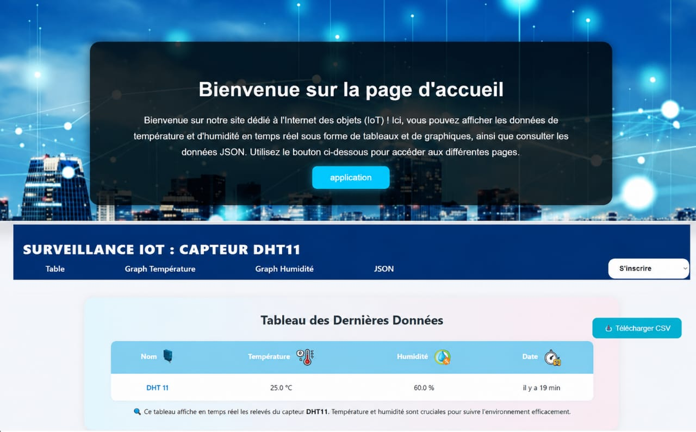
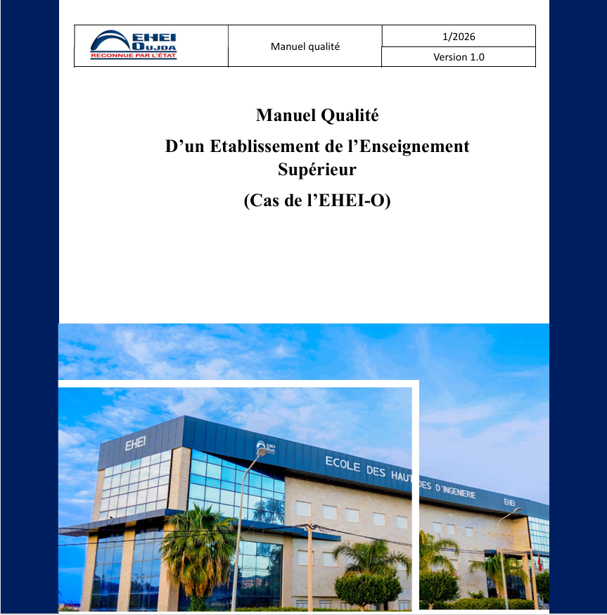
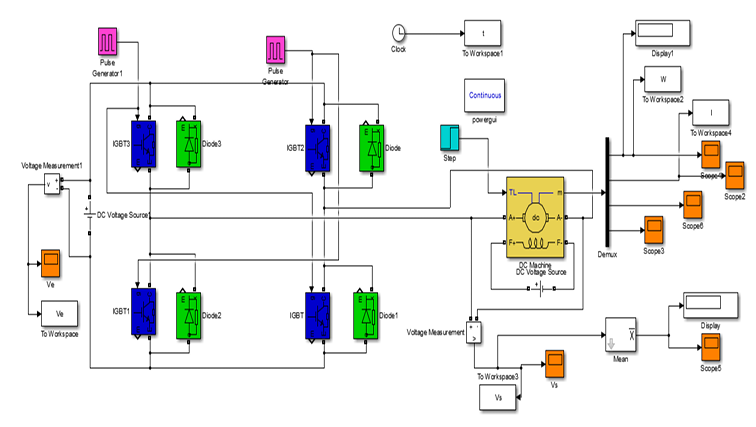
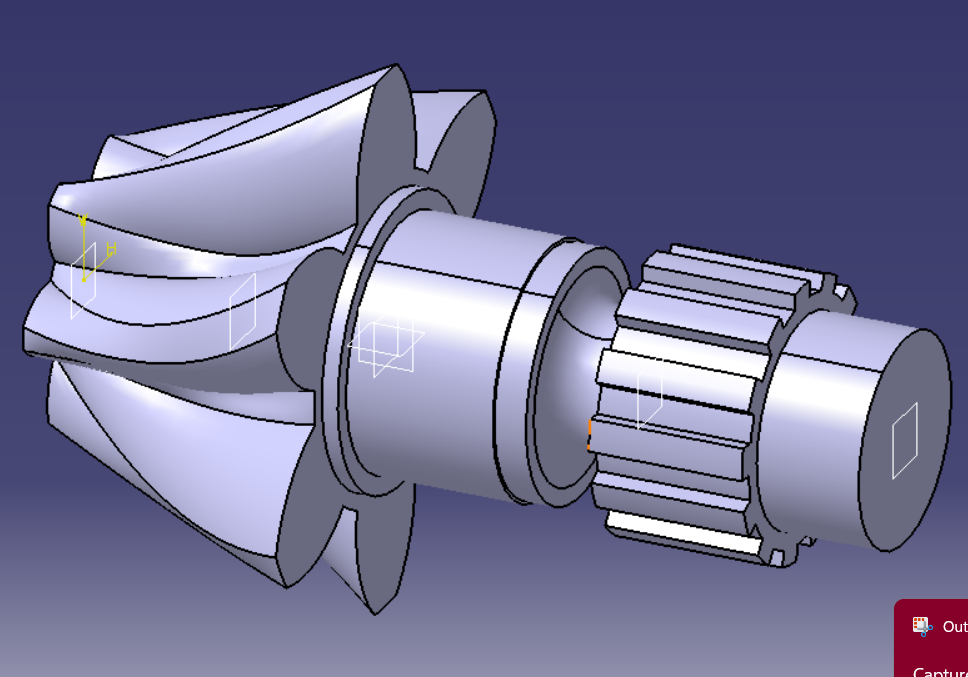
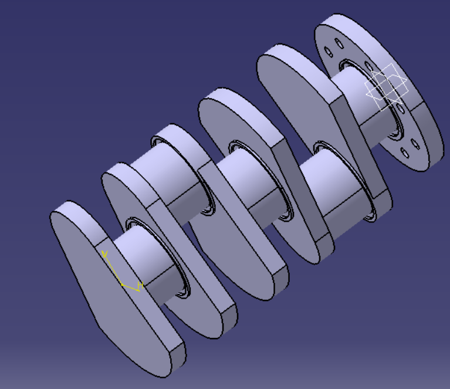

Mes réalisations.
Étude de faisabilité Kiln Master — Holcim Oujda
Étude de faisabilité pour l'implémentation du système de contrôle avancé Kiln Master sur la ligne de cuisson du clinker, menée selon la démarche DMAIC : analyse statistique de la variabilité du procédé, campagne de mesures terrain, création des variables OPC et actions correctives sur l'instrumentation. Développement sous LabVIEW d'un prototype de contrôle de haut niveau (HLC) avec trois boucles PI et action Feed-Forward pour la température de cuisson, le débit de gaz et l'alimentation du four.
Étude électrique CPS — Station de pompage, Guercif
Étude électrique et automatisation d'une station de pompage des eaux usées à partir d'un Cahier des Prescriptions Spéciales (CPS) : analyse des besoins, choix des équipements électriques et hydrauliques, schémas de puissance et de commande sous QElectroTech et Schemaplic, dimensionnement avec Caneco BT. Programmation d'un API Siemens S7-1200 sous TIA Portal V16 et développement d'une supervision WinCC (HMI) pour le contrôle en temps réel.

Système de surveillance température et humidité — Site IoT
Conception d'un système IoT pour un laboratoire stockant des réactifs chimiques sensibles : capteur DHT11 sur ESP8266 NodeMCU, transmission vers une plateforme Django avec historique graphique des mesures, alertes automatiques par WhatsApp, Telegram et Email en cas de dépassement du seuil critique. PCB usiné par CNC et boîtier imprimé en 3D.
Système sécurisé de gestion des recettes industrielles
Développement sous Siemens TIA Portal V16 d'un système de gestion sécurisée des recettes de production, avec authentification par mot de passe pour contrôler l'accès aux paramètres critiques. Génération automatique d'une alarme après trois échecs d'authentification, et interface HMI ergonomique pour une gestion simple et sécurisée en temps réel.

Conception d'un SMQ pour un établissement d'enseignement supérieur
Conception d'un Système de Management de la Qualité inspiré de la norme ISO 9001:2015 : modélisation des processus stratégiques, opérationnels et supports, élaboration d'un Manuel Qualité, approche par les risques, indicateurs de performance (KPI) et mécanismes d'amélioration continue (PDCA, audits internes, CAPA, revues de direction). Analyse des retours étudiants pour proposer des actions correctives.

Variateur de vitesse 4 quadrants pour moteur à courant continu
Étude, modélisation et simulation d'un variateur de vitesse quatre quadrants pour une MCC : modélisation du moteur, conception d'une commande PI, étude des hacheurs DC/DC et validation des performances sous MATLAB/Simulink et Proteus ISIS.
Supervision d'un torréfacteur industriel — Siemens TIA Portal V16
Développement d'une application de supervision industrielle sous Siemens TIA Portal V16 pour le pilotage d'un torréfacteur de café automatisé. Le système permet le fonctionnement en mode manuel ou automatique, la sélection de recettes de torréfaction, la régulation de la température, le contrôle de la vitesse de brassage et la supervision en temps réel du cycle de production via une interface HMI intuitive.



Mini-projet CATIA — Modélisation d'un ensemble arbre-pignons
Mini-projet de conception assistée par ordinateur sous CATIA V5, portant sur la modélisation d'un ensemble mécanique en trois pièces : un arbre cannelé avec bride de fixation, un ensemble arbre-pignons associant pignon hélicoïdal et pignon droit, et un assemblage de flasques et paliers. Travail centré sur la modélisation 3D, le respect des contraintes géométriques et fonctionnelles, ainsi que la mise en plan des pièces.